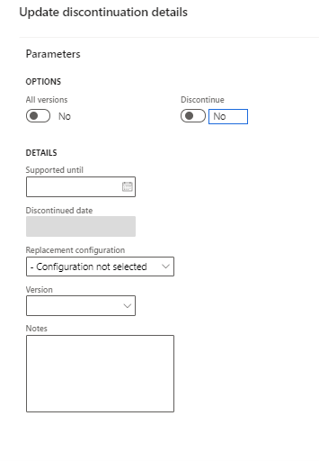

Discontinue configurations in the RCS Global repository
[!include[banner](../includes/banner.md)]This topic describes how to discontinue configuration in the RCS Global repository. Previously, it was possible only to delete configurations that were no longer required. However now you can mark a released configuration as Discontinued in the RCS Global repository. With this functionality, you can also do the following:
- Provide up front notifications when a configuration is planned to be discontinued.
- Include applicable details about the replacement configuration.
- Set a Supported until date for the specific configuration to inform the user when it will be discontinued.
When you discontinue a configuration version, you can specify the following optional information:
- Replacement configuration
- Replacement configuration version
- Free text note: Use this field to provide documentation links or references
- Supported until: This field provides the proposed date up to which the current configuration/version will be supported. This date must be updated manually.
To discontinue the configuration, complete the following steps.
- Select whether you want to discontinue a single version or all versions with the same settings in one operation by setting All versions to Yes.
- Set the Discontinue parameter to Yes.
- Select OK to discontinue the configurations. The Discontinued date field will be populated when you save the changes.

You can revert configuration back to Shared or adjust discontinuation information at any time. If you share a configuration, specify the Supported until date and all other information related to the discontinuation to indicate your plans for future discontinuation.
If you want to share information about a planned discontinuation, prior to actually discontinuing the configuration, user is able to prefill all fields related to replacement but leave the Discontinue parameter set to No.
Note
Discontinuation doesn't limit operations with configurations. You can continue to import, run, or derive the configurations, these fields are informational.
Finance supports displaying this information starting in version 10.0.14
Starting in version 10.0.14, Dynamics 365 Finance supports displaying discontinuation information. On the Global repository page, you can view up to date information related to discontinuation. By default, configurations that are discontinued are filtered out.
The Imported configurations (ERSolutionTable) page, shows configurations that were already discontinued when there were imported. For those configurations that were discontinued after import, the discontinuation information can be synchronized by running the Import configurations updates job.